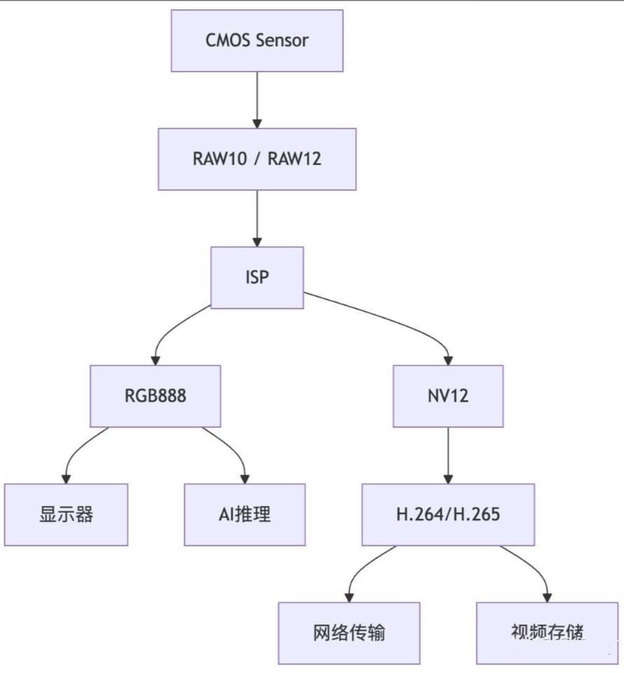

常用图像格式介绍
一、概述
本文主要介绍一下几种图像格式： RAW、RGB、YUV、NV12、MJPEG。
这些图像格式分别处于图像处理链路的不同阶段，从传感器原始数据到最终显示/存储的压缩格式。下面按数据"原始程度"从高到低逐一讲解。
1 | |
不同阶段需要不同的数据格式。

进一步简化：
1 | |
二、RAW —— 传感器原始数据
定义：图像传感器（CMOS/CCD）每个像素点只感光一种颜色（红或绿或蓝），输出的是未经任何处理（原始数据）的电信号量化值。
关键特征：
-
单通道：每个像素只有一个数值，不是 RGB 三通道
-
Bayer 阵列：最常见的排列方式，50% 绿、25% 红、25% 蓝
text
1
2
3R G R G R G
G B G B G B
R G R G R G -
位深高：通常 10bit、12bit、14bit、16bit（普通 RGB 只有 8bit）
-
线性响应：没有经过 gamma、白平衡、去马赛克等处理
-
数据量大：例如 1920×1080×12bit ≈ 3MB/帧
优点：保留最大信息量，后期空间大（白平衡、曝光可无损调整）
缺点：不能直接显示，必须经过 ISP 处理
典型场景：相机拍照、工业相机、手机 Sensor 输出
三、ISP —— 图像质量保证
RAW 数据无法直接显示。必须经过 ISP 处理。
ISP（Image Signal Processor，图像信号处理器），它是从 RAW → 可显示图像 的完整处理管线。可以是：
- 硬件 ISP：手机 SoC 里的专用模块（高通 Spectra、联发科 Imagiq、海思 ISP）
- 软件 ISP：如 libcamera、Raspberry Pi 的
raspistill、OpenCV 部分流程 - 混合：硬件做实时部分，软件做高级处理
核心职责：把传感器输出的、人眼无法直接看的 Bayer RAW，变成色彩正确、亮度自然、噪点可控的 RGB/YUV 图像。
| 模块 | 作用 |
|---|---|
| Demosaic | Bayer 插值 |
| AWB | 自动白平衡 |
| AE | 自动曝光 |
| AF | 自动对焦 |
| NR | 降噪 |
| Gamma | Gamma校正 |
| CCM | 色彩校正 |
ISP 的调校水平往往决定：夜视效果是否优秀。
四、RGB —— 三通道像素格式
定义：每个像素用红、绿、蓝三个分量表示颜色，是最直观的颜色模型。
常见排布：
| 格式 | 说明 |
|---|---|
| RGB888 | 每通道 8bit，共 24bit 像素 |
| RGB565 | R:5bit G:6bit B:5bit，共 16bit |
| RGBA8888 | 带 Alpha 通道，32bit |
| BGR888 | OpenCV 默认顺序 |
RGB888 - 最常见格式：
1 | |
优点：直观、显示设备原生支持、处理算法友好
缺点：数据量大；不符合人眼特性（人眼对亮度敏感、对色度不敏感）
典型场景：显示器、OpenCV、图像算法中间结果
RGB565 - 嵌入式设备常见
1 | |
内存布局和 RGB888 一样，不过每个颜色占用的位数更小，适用于内存受限的嵌入式设备。
需要注意，使用 opencv 时：
1 | |
读取出来实际上是：BGR，而不是：RGB，这会导致：红色变蓝色。
五、YUV —— 亮度/色度分离
定义：用 Y（亮度） 和 U/V（色度） 表示颜色。核心思想是色度可以降采样，因为人眼对亮度分辨率敏感、对色彩分辨率不敏感。
为什么能省带宽：
- Y 保留全部像素
- U/V 可以只存 1/2 或 1/4
RGB 最大的问题：数据量太大
例如：1920 × 1080 × 3 ≈ 6.22MB，那么 30FPS 带宽约等于 186MB/s。带宽压力巨大。
YUV 将图像拆成：
| 分量 | 含义 |
|---|---|
| Y | 亮度 |
| U | 蓝色差 |
| V | 红色差 |
因为：人眼对亮度敏感，对颜色不敏感。所以：Y 完整保留，U/V 压缩存储。
YUV 在存储上通常分为平面格式（Planar），半平面格式（Semi-Planar）以及打包格式（Packed）。
- 平面格式有时也称为三面格式（
Triplanar），即 Y, U, V 三个分量各自使用单独的数组保存，这种三平面分离的格式比较方便视频编码，例如：YV12、J420、IMC1、I422、J422 - 半平面格式具有两个平面而不是三个平面，一个平面存储亮度（Y）分量，另一个平面存储两个色度（UV）分量。有时也将它们称为双平面格式（
BiPlanar），例如：NV12、NV21 - 打包格式通常只有一个平面，所有亮度（Y）和色度（UV）数据都交织在一起。有点类似于 RGB 格式，只是使用了不同的色彩空间，例如：AYUV、YUYV、UYVY
常见采样格式：
| 格式 | 含义 | 数据量（相对 RGB） |
|---|---|---|
| YUV444 | U/V 与 Y 同分辨率 | 3 字节/像素 |
| YUV422 | U/V 水平减半 | 2 字节/像素 |
| YUV420 | U/V 水平和垂直都减半 | 1.5 字节/像素 |
5.1 YUV444（无降采样）
每个像素都有独立的 Y、U、V。
1 | |
数据量：3 字节/像素（8bit 时）
图示（每个格子一个完整 YUV）：
1 | |
用途：高质量后期、色度需要精确处理的场景。
5.2 YUV422（水平方向色度减半）
每 2 个水平相邻像素共用一组 U、V，Y 不变。
1 | |
即：Y0 Y1 共用 U0 V0；Y2 Y3 共用 U2 V2。
数据量：2 字节/像素（Y 1 + UV 共 1）
图示：
1 | |
常见排布：
| 名称 | 排布 |
|---|---|
| YUYV (YUY2) | Y0 U0 Y1 V0 Y2 U2 Y3 V2 |
| UYVY | U0 Y0 V0 Y1 U2 Y2 V2 Y3 |
| YV16 | Y 平面 + U 平面 + V 平面（planar） |
用途：视频采集卡、专业视频、USB 摄像头
5.3 YUV420（水平和垂直都减半）
每 2×2 的 4 个像素共用一组 U、V，Y 不变。
1 | |
即：Y00 Y10 Y01 Y11 共用 U0 V0。
数据量：1.5 字节/像素（Y 1 + UV 共 0.5）
关键：U、V 的分辨率是 Y 的 1/4（宽高各一半）。
图示（以 4×4 为例）：
1 | |
六、YUYV —— USB 摄像头最常见格式
YUYV（也叫 YUY2，FourCC 代码 YUYV / YUY2）是 YUV422 的一种 packed（打包）排布。
- 采样格式：YUV422（色度水平减半）
- 内存排布：packed（Y、U、V 交错，不分区）
- 数据量：2 字节/像素
核心规则：每 2 个水平相邻像素，共用一组 U、V，按 Y0 U Y1 V 的顺序打包。
1 | |
关键点：
- 每 4 个字节表示 2 个像素
- 第 1 字节：像素 0 的 Y
- 第 2 字节：像素 0/1 共用的 U
- 第 3 字节：像素 1 的 Y
- 第 4 字节：像素 0/1 共用的 V
图示（一行 8 像素）：
1 | |
七、NV12 —— 视频行业事实标准
定义：NV12 是 YUV420SP 的一种，属于"半平面（semi-planar）"格式。
内存布局：
1 | |
UV 平面的 strides, width 与 Y 平面一样长，但 height 仅为 Y 平面的一半。因此一个像素 12 bits，图示（以 4×4 为例）：
1 | |
对比其他 YUV420：
| 格式 | 排布 | 特点 |
|---|---|---|
| I420 (YU12) | Y + U平面 + V平面 | 三平面 |
| YV12 | Y + V平面 + U平面 | 三平面 |
| NV12 | Y + UV交错 | 两平面（半平面） |
| NV21 | Y + VU交错 | 两平面，Android 相机常用 |
为什么用 NV12：
- GPU/硬件编解码器友好（UV 交错连续，便于硬件读取）
- 内存对齐简单
- Android Camera、Intel Media SDK、很多 ISP 输出默认格式
优点：硬件友好、省带宽
缺点：仍是 YUV 家族，需转换才能显示
NV21 与 NV12 唯一区别：
2
3
4
5# NV12
UV UV UV
# NV21
VU VU VU
八、MJPEG —— 运动 JPEG
为什么需要 MJPEG？
1080P@30FPS：
YUYV 需要带宽约为 124MB/s，USB2.0 无法承载。
而 MJPEG 只需要 10~30MB/s。
定义：把视频的每一帧都独立用 JPEG 压缩，然后把这些 JPEG 帧串起来传输/存储。
结构：
1 | |
关键特征：
- 帧内压缩：每帧独立，不依赖前后帧
- 有损压缩：压缩率高（可到 1/10~1/20）
- 可直接解码显示：每帧都是完整图片
对比其他视频编码：
| 特性 | MJPEG | H.264/H.265 |
|---|---|---|
| 压缩方式 | 仅帧内 | 帧内+帧间 |
| 压缩率 | 中 | 高 |
| 延迟 | 低 | 较高 |
| 随机访问 | 任意帧可解 | 需关键帧 |
| 计算复杂度 | 低 | 高 |
| 带宽 | 大 | 小 |
优点：低延迟、实现简单、每帧独立、硬件要求低
缺点：压缩率不如 H.264，带宽/存储消耗大
典型场景：USB 摄像头、网络摄像头、工业相机、无人机图传、视频监控（低延迟场景）
九、H.264/H.265
需要注意的是，H.264 和 H.265 是视频压缩编码标准，和前面的 RAW/RGB/YUV/NV12/MJPEG 属于完全不同的层次——前面那些是像素格式，H.264/H.265 是压缩编码格式。
1 | |
关键点：
- YUV/NV12 是编码器的输入
- H.264/H.265 是编码器的输出（压缩码流）
- MP4 等是容器，里面装 H.264/H.265 码流
原始 YUV420 数据量太大：
| 分辨率 | 帧率 | YUV420 码率 |
|---|---|---|
| 720p | 30 | ~220 Mbps |
| 1080p | 30 | ~500 Mbps |
| 4K | 60 | ~2000 Mbps |
而实际网络/存储需求：
- 在线视频：几 Mbps
- 蓝光：几十 Mbps
- 视频通话：几百 kbps
压缩比需要 100~1000 倍。
9.1 H.264
全称：H.264 / MPEG-4 AVC（Advanced Video Coding）
发布：2003 年（ITU-T + ISO/IEC 联合）
别名：AVC、MPEG-4 Part 10
- 核心框架
1 | |
- 关键技术
① 帧类型
| 类型 | 说明 |
|---|---|
| I 帧 | 帧内编码，独立可解，关键帧 |
| P 帧 | 前向预测，参考前面的帧 |
| B 帧 | 双向预测，参考前后帧 |
② 宏块（Macroblock）
- H.264 基本单元是 16×16 宏块
- 可细分到 16×16、16×8、8×16、8×8、8×4、4×4
③ 运动估计与补偿
- 在参考帧里找最匹配的块
- 记录运动矢量（MV），而非像素本身
- 支持 1/4 像素精度
④ 变换与量化
- 4×4 / 8×8 整数 DCT
- 量化步长 QP（0~51），越大压缩越狠、画质越差
⑤ 熵编码
- CAVLC：上下文自适应变长编码，简单
- CABAC：上下文自适应二进制算术编码，压缩率高 10~15%，但慢
⑥ 环路滤波
- 去块滤波（Deblocking Filter）
- 消除块效应
- Profile 与 Level
| Profile | 用途 |
|---|---|
| Baseline | 视频通话、低延迟 |
| Main | 标清/高清广播 |
| High | 蓝光、高清存储 |
| High 10 | 10bit |
| High 4:4:4 | 专业 |
Level：限制分辨率、码率、宏块数等（如 Level 4.1 支持 1080p30）
- 优缺点
优点：
- 压缩率高（比 MPEG-2 高 2~3 倍）
- 兼容性极好，几乎所有设备支持
- 硬件编解码成熟
缺点：
- 相比 H.265 压缩率低
- 4K/8K 下码率仍偏高
9.2 H.265
全称：H.265 / HEVC（High Efficiency Video Coding）
发布：2013 年
目标：在相同画质下，码率比 H.264 降低 50%
- 相对 H.264 的改进
| 方面 | H.264 | H.265 |
|---|---|---|
| 基本单元 | 16×16 宏块 | CTU 最大 64×64 |
| 块划分 | 固定几种 | 四叉树灵活划分 |
| 变换 | 4×4 / 8×8 | 4×4 ~ 32×32 |
| 帧内预测 | 9 种方向 | 35 种方向 |
| 运动补偿 | 1/4 像素 | 1/4 像素 + 更多模式 |
| 熵编码 | CABAC/CAVLC | 仅 CABAC（改进版） |
| 并行处理 | 有限 | Tile、WPP |
| 环路滤波 | Deblocking | Deblocking + SAO |
- 关键技术
① CTU（Coding Tree Unit）
- 最大 64×64
- 用四叉树递归划分到 8×8
- 大块适合平坦区，小块适合细节区
② 35 种帧内预测方向
- H.264 只有 9 种
- 更精确的方向预测 → 残差更小
③ SAO（Sample Adaptive Offset）
- 在去块滤波后，逐像素补偿
- 减少振铃效应，提升画质
④ WPP / Tile 并行
- Wavefront Parallel Processing
- 多核并行编码/解码
- Profile 与 Level
| Profile | 用途 |
|---|---|
| Main | 8bit 4:2:0 |
| Main 10 | 10bit 4:2:0（HDR） |
| Main Still Picture | 单帧图像 |
| Main 4:4:4 | 专业 |
- 优缺点
优点：
- 压缩率比 H.264 高 50%
- 支持 4K/8K、HDR、10bit
- 适合带宽受限场景
缺点：
- 专利授权复杂（多个专利池）
- 编码复杂度高（比 H.264 高 2~10 倍）
- 老旧设备不支持
- 浏览器支持不如 H.264 广泛
十、常见格式数据量对比
以 1920×1080 为例：
| 格式 | 每像素占用 | 单帧大小 |
|---|---|---|
| RGB888 | 3 Byte | 6.22 MB |
| YUYV | 2 Byte | 4.15 MB |
| NV12 | 1.5 Byte | 3.11 MB |
| MJPEG | 压缩后 | 0.1~1 MB |